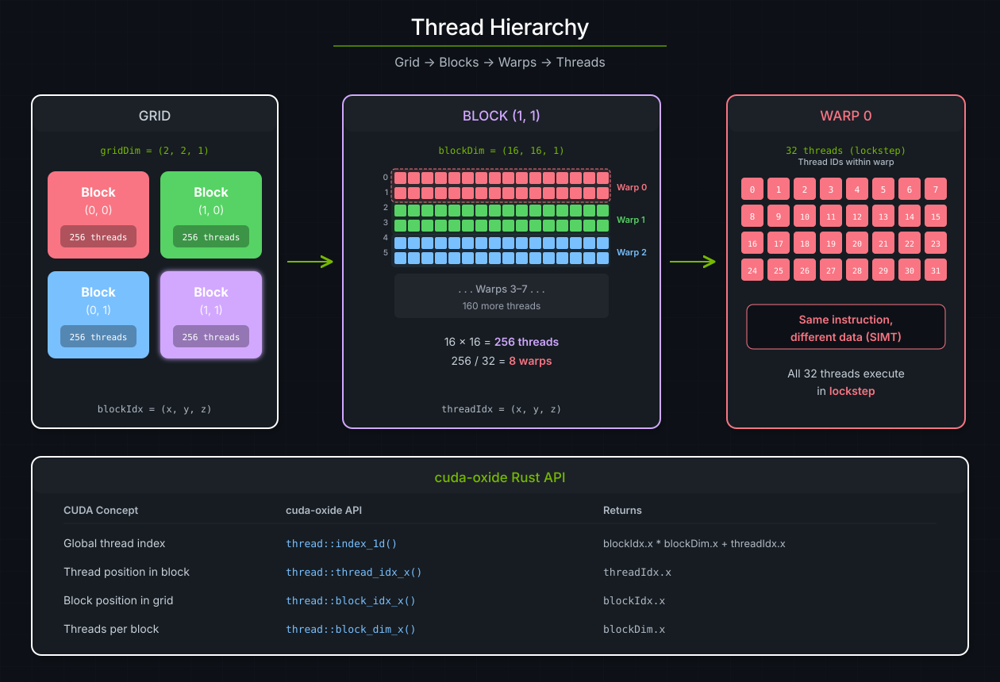
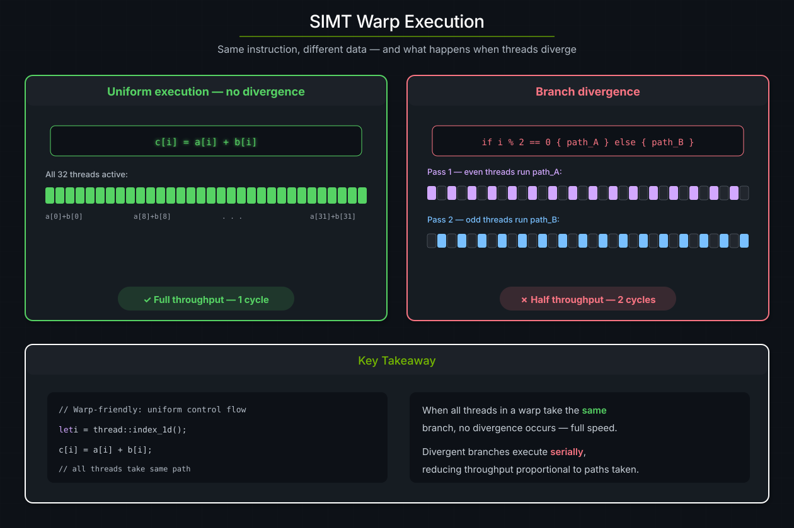
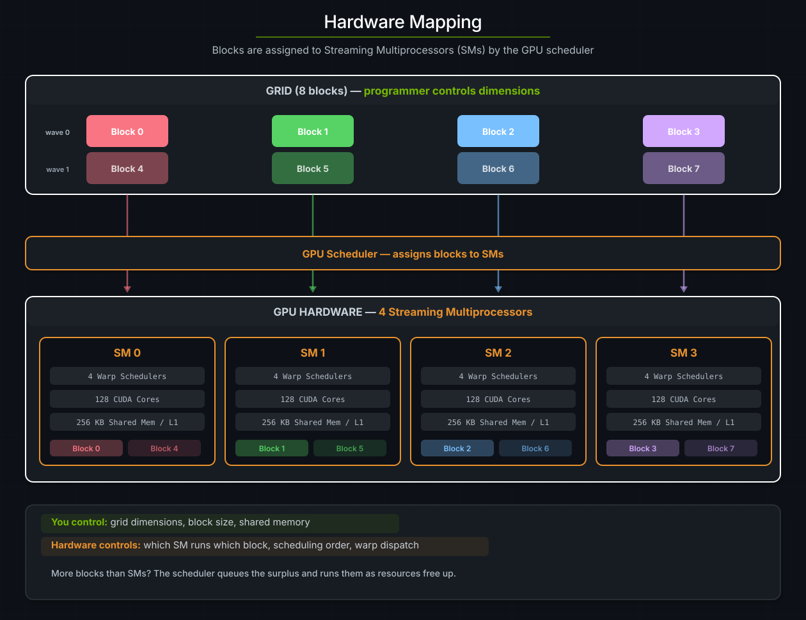

The CUDA Execution Model#
This chapter covers the CUDA SIMT execution model -- how work is organized into threads, warps, blocks, and grids -- and how cuda-oxide exposes each level through safe, ergonomic Rust APIs.
請參閱
CUDA Programming Guide -- Programming Model for the authoritative reference on the CUDA execution model.
Threads, blocks, and grids#
Every kernel launch creates a grid of thread blocks. The three-level hierarchy is the foundation of GPU programming:
Level |
What it is |
Size |
Key property |
|---|---|---|---|
Grid |
All blocks launched by one kernel call |
Up to 2³¹ - 1 blocks per dimension |
Blocks execute independently |
Block |
A group of threads that can cooperate |
Up to 1024 threads |
Threads share fast on-chip memory |
Warp |
32 consecutive threads within a block |
Always 32 |
Execute instructions in lockstep (SIMT) |
A kernel launch specifies two things: how many blocks in the grid (the grid dimensions) and how many threads in each block (the block dimensions). The hardware then groups every 32 consecutive threads into warps automatically -- you never create warps explicitly.
{kind=link}

The three-level CUDA thread hierarchy. A 2×2 grid of blocks, each containing 256 threads arranged in 8 warps of 32. The bottom legend maps CUDA concepts to their cuda-oxide API equivalents.#
Thread indexing in cuda-oxide#
Inside a kernel, every thread needs to know which element it should work on.
CUDA provides built-in variables (threadIdx, blockIdx, blockDim,
gridDim); cuda-oxide wraps these in the cuda_device::thread module:
use cuda_device::{kernel, thread, DisjointSlice};
#[kernel]
pub fn vecadd(a: &[f32], b: &[f32], mut c: DisjointSlice<f32>) {
let idx = thread::index_1d();
if let Some(c_elem) = c.get_mut(idx) {
*c_elem = a[idx.get()] + b[idx.get()];
}
}
thread::index_1d() computes blockIdx.x * blockDim.x + threadIdx.x. It maps
threads to distinct array elements when grid and block Y/Z dimensions are 1.
That is the common shape for 1D data-parallel kernels; a domain = 1 prepared
launch proves it.
For cases where you need individual components, cuda-oxide exposes the raw accessors:
cuda-oxide API |
Equivalent CUDA C++ |
Returns |
|---|---|---|
|
|
Global 1D thread index |
|
|
Thread's position within its block |
|
|
Block's position within the grid |
|
|
Number of threads per block (x) |
小訣竅
For multi-dimensional indexing (e.g., 2D matrix operations), use threadIdx_y(),
blockIdx_y(), and blockDim_y() alongside the _x variants to compute
row/column indices.
Warps and SIMT execution#
A warp is the fundamental scheduling unit on NVIDIA GPUs. Every 32 consecutive threads in a block form one warp, and all 32 threads in a warp execute the same instruction at the same time -- but on different data. This model is called SIMT (Single Instruction, Multiple Thread).
When all threads in a warp follow the same control-flow path, the warp achieves
full throughput. When threads diverge (different threads take different if
branches), the hardware serializes the paths: it executes one branch with some
threads masked off, then the other branch, then reconverges. This is called
branch divergence and it directly reduces throughput.
{kind=link}

Left: uniform execution where all 32 threads run the same instruction in one cycle. Right: branch divergence where even and odd threads take different paths, requiring two serial passes.#
Why this matters#
You don't need to think about warps to write correct kernels -- cuda-oxide handles the details. But understanding SIMT helps you write fast ones:
Prefer uniform control flow. When all threads in a warp evaluate the same branch, there is no divergence penalty.
Data-dependent branches are fine as long as nearby threads (those in the same warp) tend to take the same path.
Avoid thread-ID-based branching like
if thread::threadIdx_x() % 2 == 0inside hot loops -- this guarantees every warp diverges.
請參閱
CUDA Programming Guide -- SIMT Architecture for the full hardware specification of warp execution and reconvergence.
Hardware mapping#
When you launch a kernel, the GPU's hardware scheduler assigns each block to a Streaming Multiprocessor (SM). Multiple blocks can run concurrently on the same SM -- the exact number depends on the block's resource usage (registers, shared memory, threads).
The key insight: you control the grid and block dimensions; the hardware controls everything else. You never specify which SM runs which block, or in what order blocks execute. This separation is what lets the same kernel scale from a laptop GPU with a handful of SMs to a data-center GPU with 100+.
{kind=link}

Eight blocks assigned to four SMs by the GPU scheduler. Each SM has its own warp schedulers, CUDA cores, and shared memory/L1 cache. Blocks 4-7 (dashed arrows) run after blocks 0-3 complete or are queued alongside them if resources permit.#
What limits concurrency#
Each SM has a fixed pool of resources. A block is assigned to an SM only if the SM has enough of all of the following:
Resource |
Typical limit (Ampere) |
Controlled by |
|---|---|---|
Threads |
2048 per SM |
|
Registers |
65536 per SM |
Compiler allocation |
Shared memory |
164 KB per SM (configurable) |
|
Block slots |
32 per SM |
Grid size |
When a block finishes, its resources are freed and the scheduler immediately assigns a queued block to that SM. This is why launching more blocks than the GPU has SMs is not just okay -- it's the normal and expected pattern.
請參閱
CUDA Programming Guide -- Hardware Implementation for architecture-specific SM resource limits and occupancy calculations.
Launch configuration#
On the host side, LaunchConfig tells the runtime how to shape the grid:
use cuda_core::LaunchConfig;
// Quick 1D launch: 256 threads per block, enough blocks to cover N elements
let cfg = LaunchConfig::for_num_elems(N as u32);
for_num_elems uses a block size of 256 and computes the grid size via ceiling
division -- the right default for most element-wise kernels. For more control,
construct LaunchConfig directly:
let cfg = LaunchConfig {
grid_dim: (4, 4, 1), // 4×4 = 16 blocks
block_dim: (16, 16, 1), // 16×16 = 256 threads per block
shared_mem_bytes: 0, // no dynamic shared memory
};
Then pass it to the generated raw launch method. The call is unsafe because
LaunchConfig itself does not prove that hidden Y/Z dimensions are inactive:
// SAFETY: `for_num_elems` is 1D and all three buffers contain N elements.
unsafe {
module.vecadd(
&stream,
LaunchConfig::for_num_elems(N as u32),
&a_dev,
&b_dev,
&mut c_dev,
)
}
.expect("Kernel launch failed");
Or with the async API:
// SAFETY: this is 1D, buffers contain N elements, and module/scheduler share a context.
unsafe {
module.vecadd_async(
LaunchConfig::for_num_elems(N as u32),
&a_dev,
&b_dev,
&mut c_dev,
)
}?
.sync()?;
Choosing block size#
The block size is the single most important tuning knob:
256 threads is a safe default. It balances occupancy (multiple blocks per SM) with register pressure on most architectures.
Powers of 2 (128, 256, 512) align naturally with warp boundaries and avoid wasting threads.
Too small (< 128) may leave warp schedulers underutilized.
Too large (1024) uses the full block thread limit, which may reduce the number of concurrent blocks per SM.
The grid size follows from the block size and the problem size:
grid_x = (N + block_x - 1) / block_x. This is exactly what
LaunchConfig::for_num_elems computes.
Bounds checking#
Because the grid size is rounded up, some threads will have indices beyond the
array length. cuda-oxide's DisjointSlice handles this safely -- get_mut
returns None for out-of-bounds indices, so those threads simply do nothing:
#[kernel]
pub fn vecadd(a: &[f32], b: &[f32], mut c: DisjointSlice<f32>) {
let idx = thread::index_1d();
if let Some(c_elem) = c.get_mut(idx) { // out-of-bounds threads skip
*c_elem = a[idx.get()] + b[idx.get()];
}
}
This is a deliberate departure from CUDA C++, where bounds-checking is the programmer's responsibility. cuda-oxide's approach eliminates an entire class of out-of-bounds memory bugs at the cost of a single branch (which is uniform across the warp for all but the last block).